Sep 2026
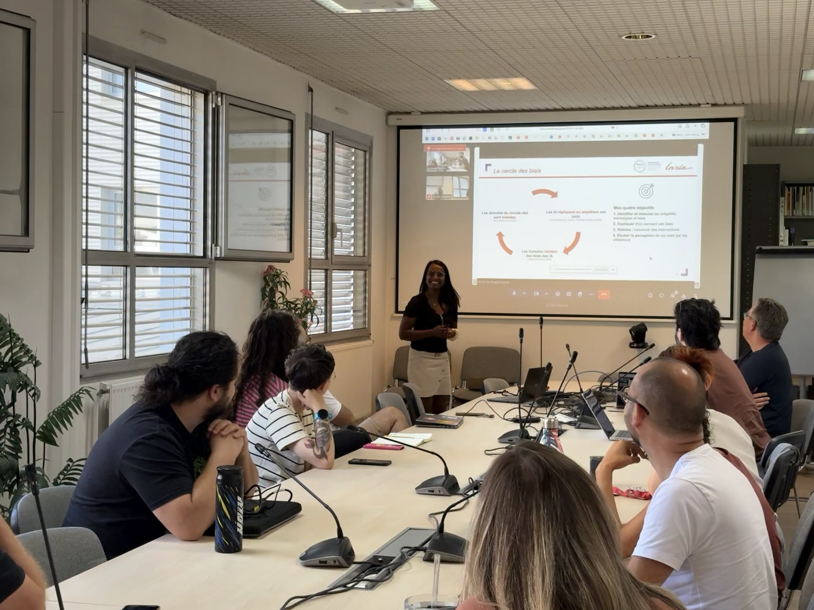
SAMOVA team seminar, IRIT, Toulouse
Invited seminar on bias in multimodal human-agent interaction and on LLM-based analysis of interaction data.
Invited talks, then the conference talks and posters I have presented, most recent first, followed by the full list of references. Names in bold indicate authorship.

Invited seminar on bias in multimodal human-agent interaction and on LLM-based analysis of interaction data.
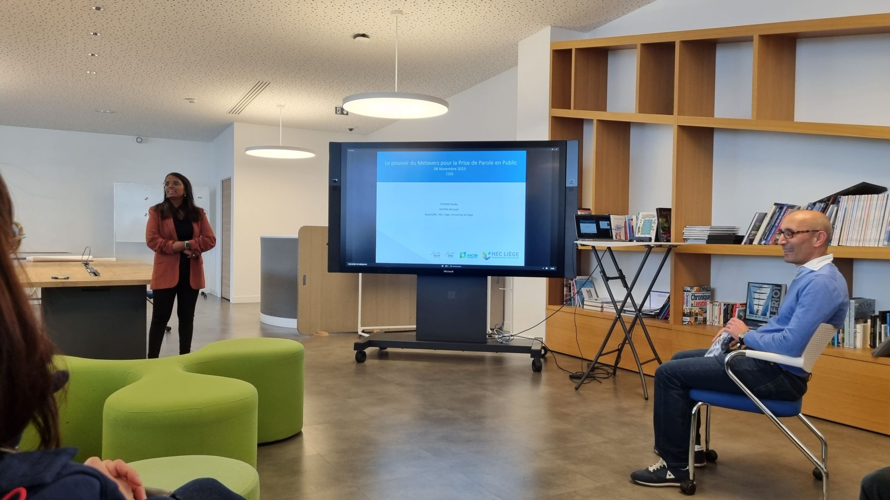
Presented the use of virtual reality to improve public speaking skills in a new context, the airline industry.
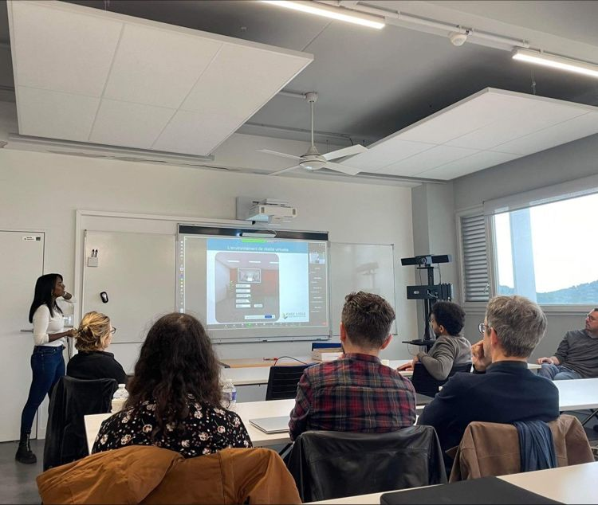
Presented our research on virtual reality for public speaking training and explored new collaborations, with Michaël Schyns and Sarah Saufnay.
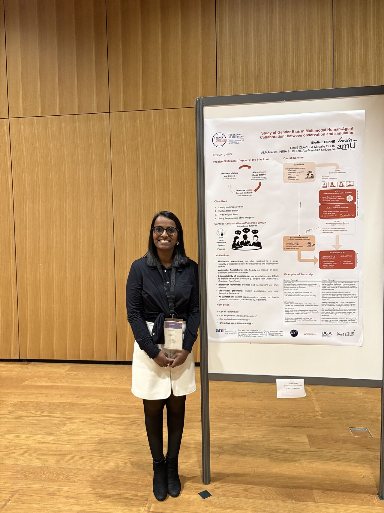
Poster presentation at the national event gathering the French academic community around the opportunities and challenges of the digital continuum.
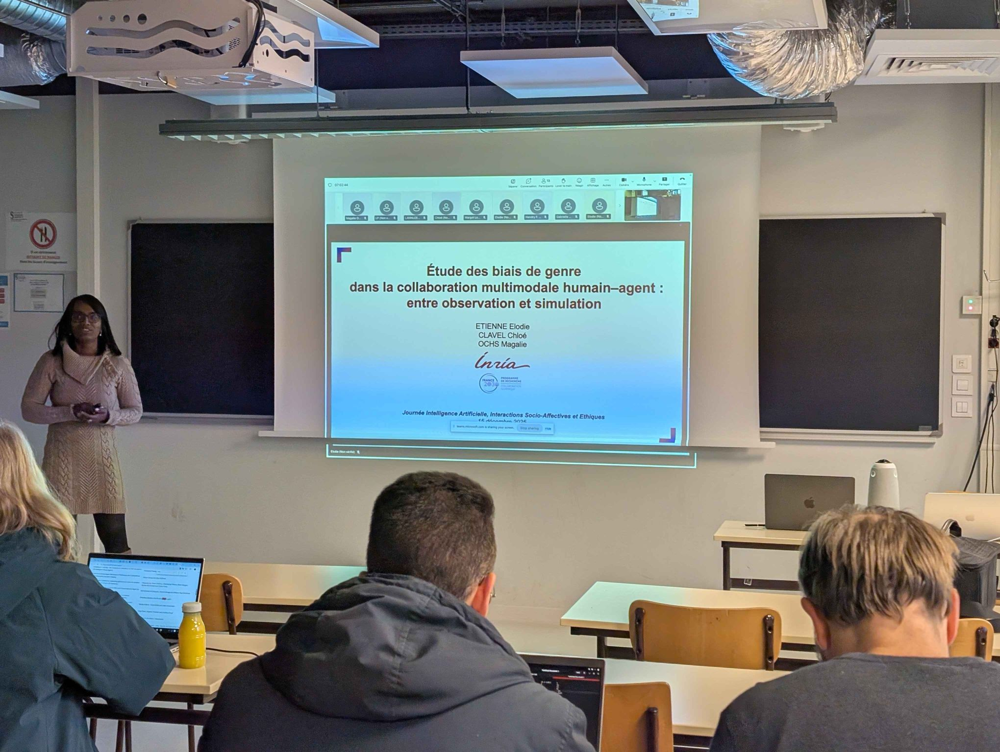
First scientific presentation of my postdoctoral work, on gender bias in multimodal human-agent collaboration, between observation and simulation.
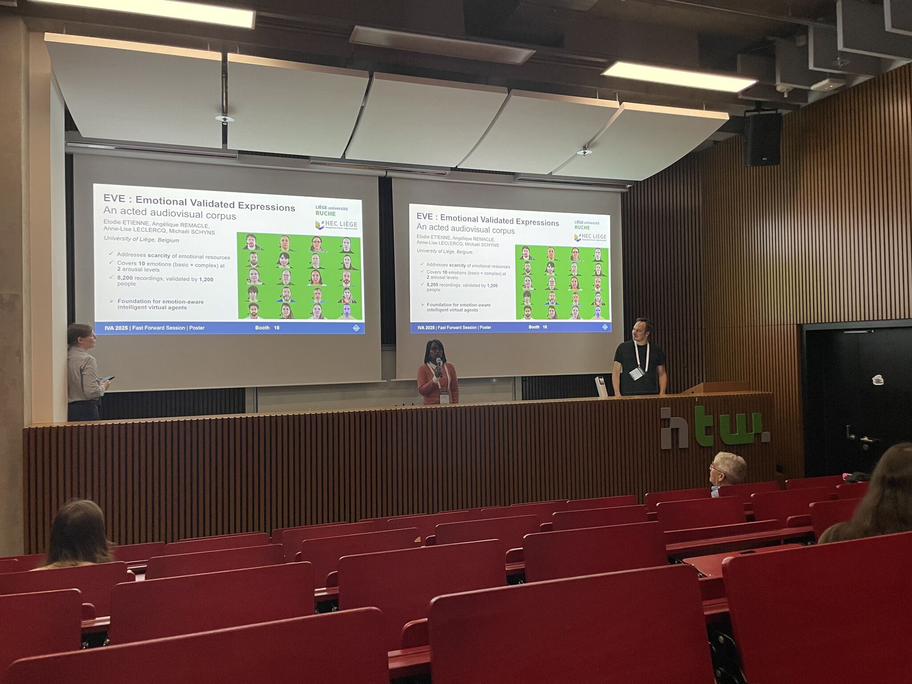
Presented the final part of my PhD research (the EVE corpus) and, with Marion Ristorcelli, the work carried out during my research stay at Aix-Marseille Université.
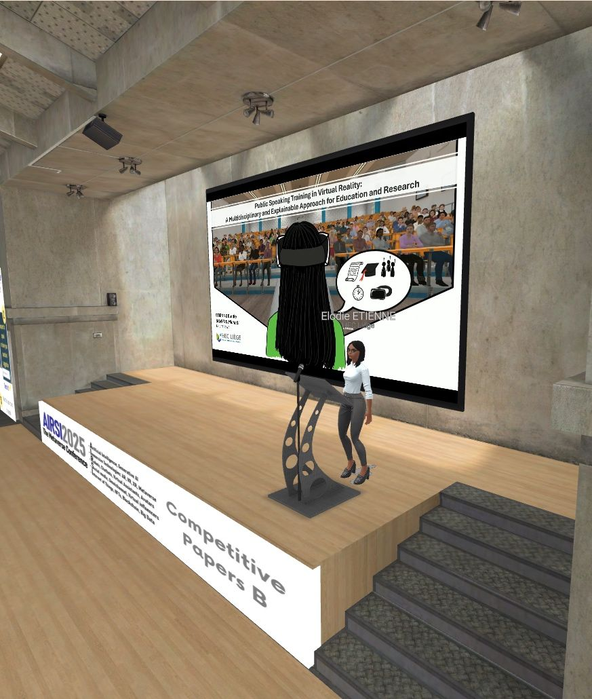
Presented Public Speaking Training in Virtual Reality: A Multidisciplinary and Explainable Approach for Education and Research, the core of my doctoral journey, co-authored with Michaël Schyns.
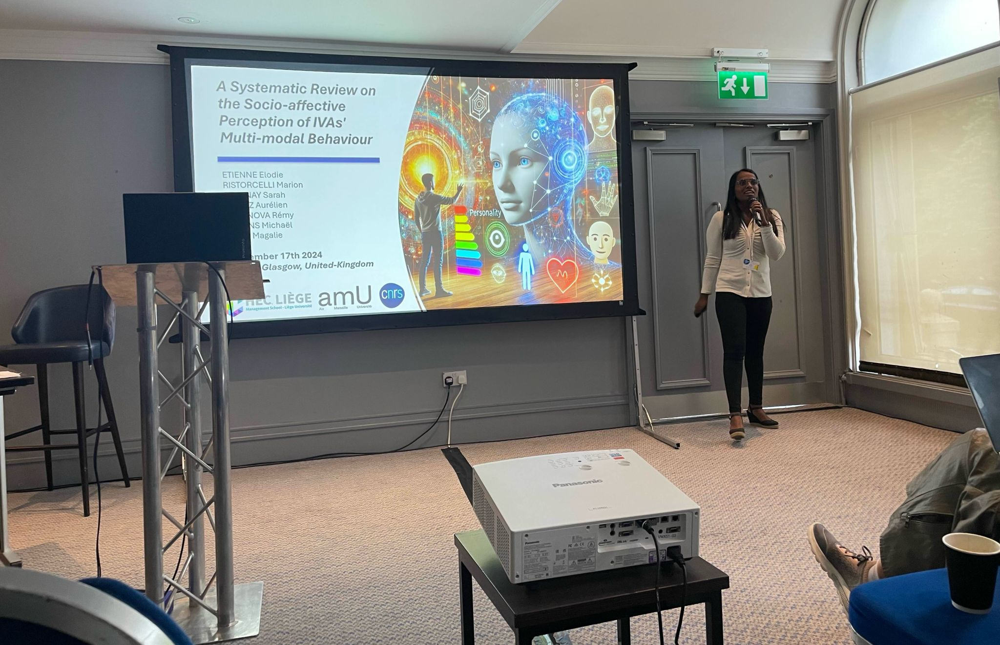
Presented my second first-author paper, a systematic review on the perception of virtual agents, and the first paper of my collaboration with Aix-Marseille Université.
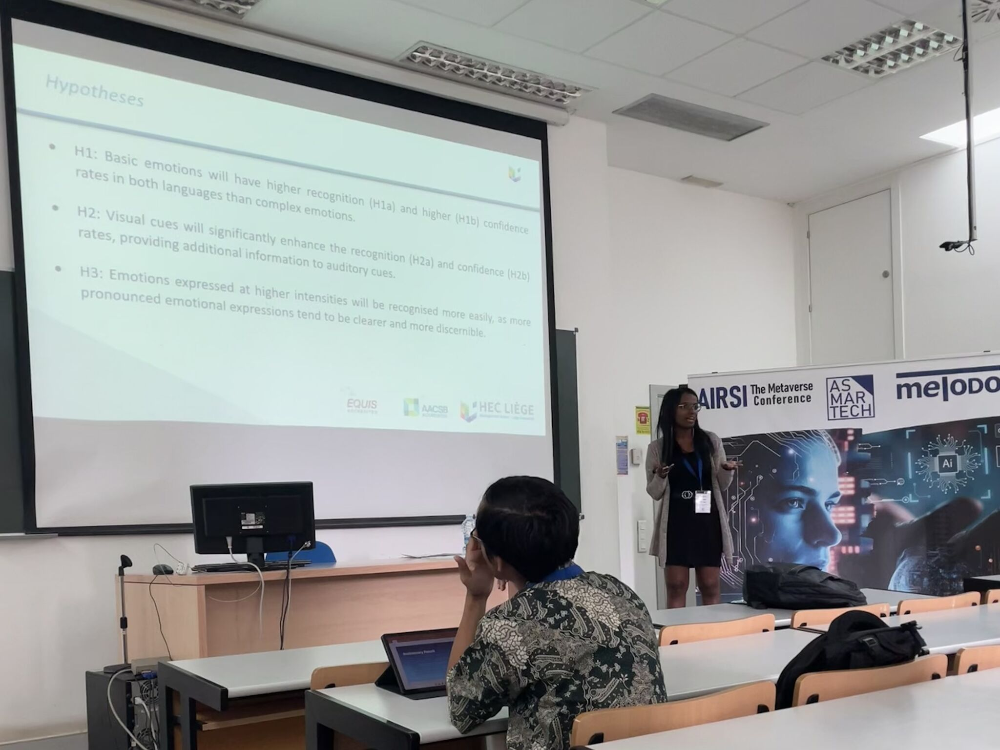
Presented the progress of the EVE emotional audiovisual corpus.
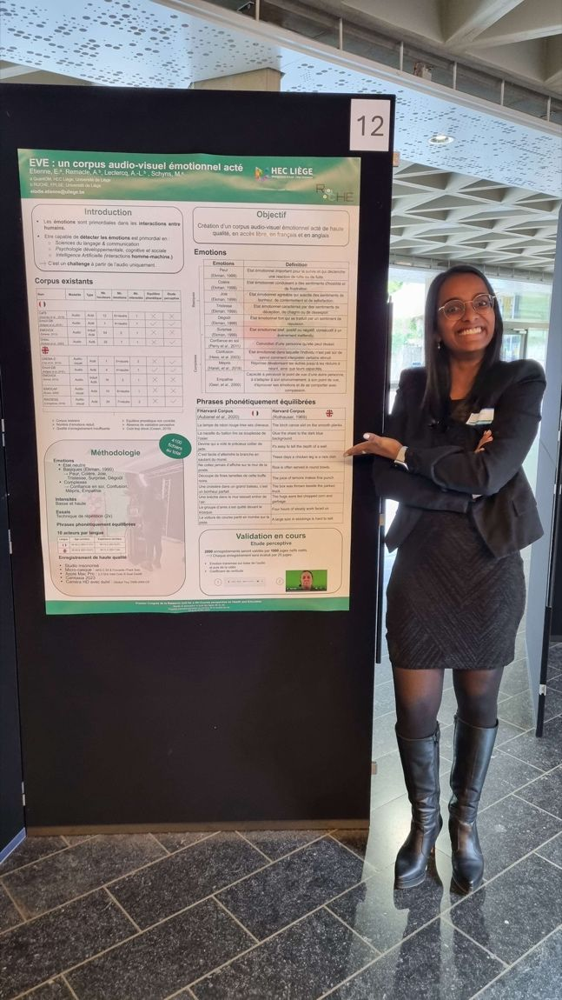
Poster and pitch on the creation of EVE, a high-quality audiovisual corpus of emotions; also chaired the first parallel session on immersive technologies.
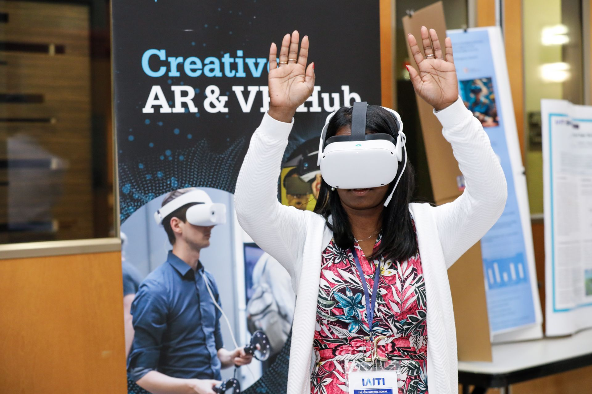
Oral presentation of our collaborative project on virtual reality for mooting, with Timothy Jung, Justin Cho, and Michaël Schyns.
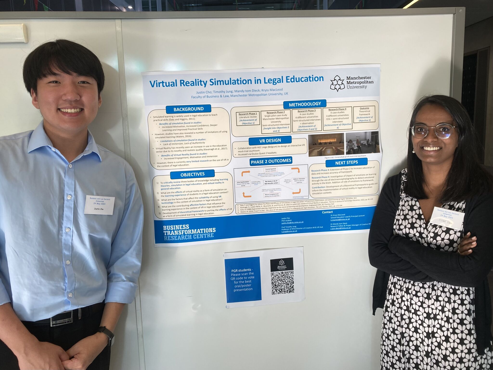
Poster presentation with Justin Cho of our project on virtual reality simulation in legal education.
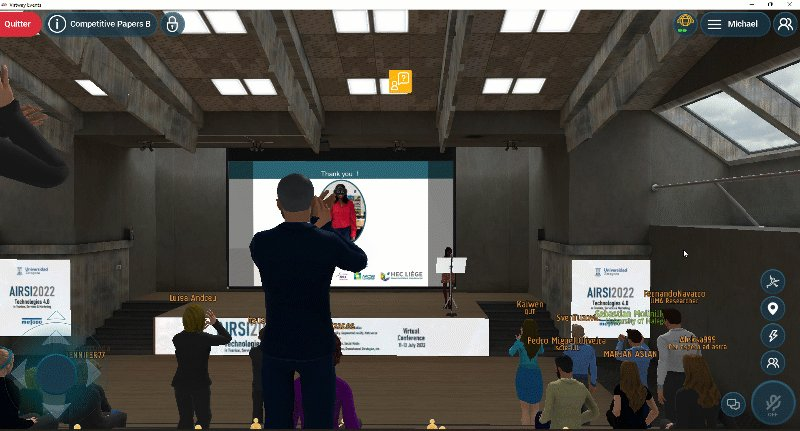
Presented our work on the perception of avatars in virtual reality, inside a metaverse venue.
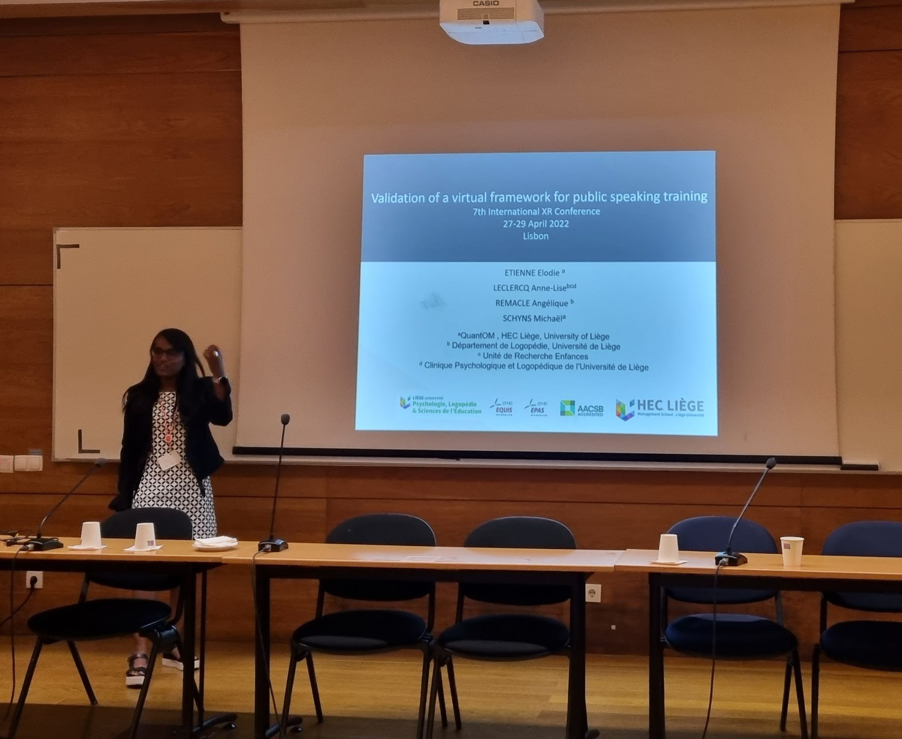
Presented my work on the perception of attitudes in virtual reality.
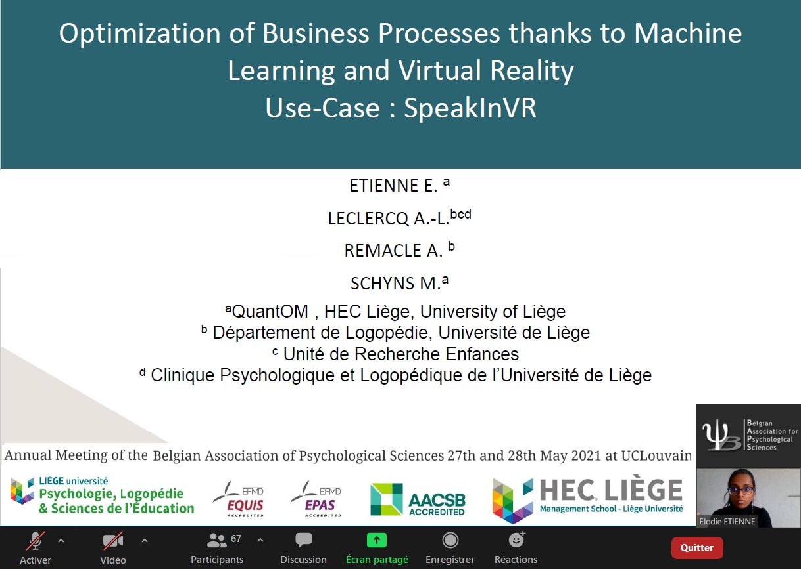
Presented SpeakInVR and the validation of a virtual audience for public speaking.